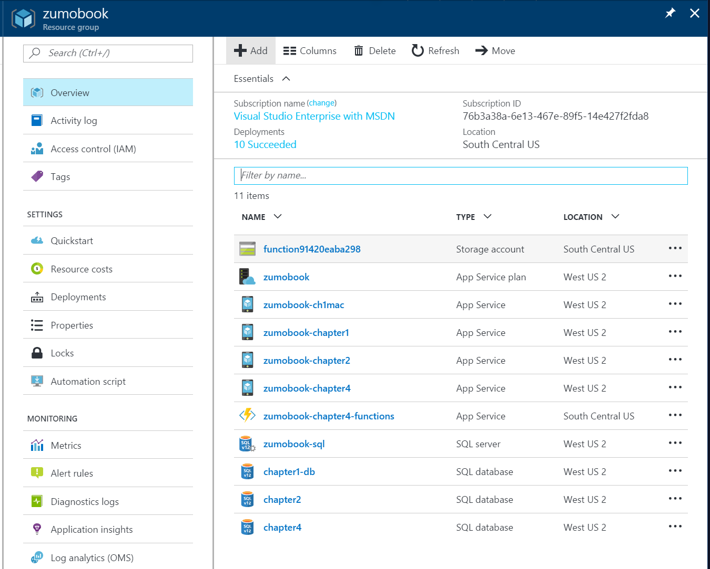

Functions
WebJobs run in the context of your App Service Plan, which means they inherit the scaling capabilities of that plan, and may cause the site to scale unnecessarily. What should you do if you don't want this to happen?
Enter Azure Functions. Azure Functions are a technology for running WebJobs in a dynamic compute context. Dynamic Compute is a relative newcomer to the cloud computing stage and part of a new paradigm known as "Serverless".
Let's take a tour through the history of cloud. In the beginning, cloud providers provided virtual machines, networking and storage, also known as "Infrastructure as a Service" or IaaS. You built a cloud service in much the same way as you built an on-premise solution. You cede control of the hardware to the cloud provider, but you are responsible for the maintenance of the platform.
"Platform as a Service" or PaaS is a step up from this. With PaaS, you cede control of the operating system, security patching and platform maintenance to the cloud provider. You are responsible for the code that is running your app. With PaaS, however, you are still somewhat responsible and aware of the underlying infrastructure. You generally are making decisions on when to add a new virtual machine to the pool for scaling, for example. The virtual machine is present.
"Software as a Service" (or SaaS) is the opposite end of the cloud services to IaaS. You are not responsible for anything in the platform. You just use the software.

A good analogy is how to get a meal. IaaS is akin to going to the grocery store, picking all the ingredients you need, preparing the ingredients, cooking the meal, and serving the meal to you and your guest. SaaS is akin to going out to a restaurant and telling the waiter what you want. PaaS is similar to food box delivery services - they provide the ingredients and the recipe, but you do the cooking.
In both of these cases, you are trading off management convenience for management control. IaaS has lots of control, but you have to do pretty much all the management yourself. SaaS is run for you, but you have no control. PaaS is in between these two extremes.
But what about when you want even more management convenience than PaaS can offer, but you still want to run your application? Something inbetween PaaS and Saas, where scaling issues are taken care of for you. This is where Serverless technologies and dynamic compute come in. With Serverless, you still manage your code. However, they are infinitely scalable. That comes at a cost in terms of flexibility. Serverless does not mean "without servers". There are still servers involved. You just don't need to manage them in any way.
Azure Functions are an implementation of Serverless technology to allow WebJobs to be written that happen in dynamic compute. You pay for the number of executions. (Technically, pricing is more complex than this simplification, but you will notice that your price goes up as the number of executions goes up). You can consider Azure Functions as "WebJobs as a Service".
This isn't the only Serverless technology on the Azure platform. Azure Logic Apps is also a Serverless technology, covering Workflow. Function execution is also not the only serverless technology. You can find examples in authentication, message queuing, edge caching, search and others.
It's quite possible to write a mobile backend entirely in Azure Functions. However, this is undesirable mostly because some processes (most notably SQL database access) require a relatively lengthy cold-start process. Functions are short-lived processes and may change the server that they are running on frequently. The mobile backend can provide efficiencies in this scenario by keeping a pool of connections open to the SQL database. This efficiency is not possible in Azure Functions.
Building an Azure Function¶
The first thing to note about Azure Functions is that they are a completely separate resource in the Azure Portal. This means that they are built separately, charged separately and scale independently to your mobile backend. This is in contrast to WebJobs, where the WebJob shares infrastructure with the mobile backend and scales with the mobile backend.
Start by logging in to the Azure Portal.
- Click on the + NEW button, or the + Add button on a resource group.
- Search for Function App, then click Create.
- Enter a unique name for the Function App. The Function App is still an App Service, so you cannot name the Function App the same as your mobile backend.
- Set the Hosting Plan to be Consumption Plan.
- Pick your storage account that you created for the WebJobs demos (or skip to create a new one).
- Click on Create.

Warn
Dynamic Function Apps are not allowed in the same Region + Resource Group combination as non-Dynamic apps. That generally means you have to create another Resource Group to hold your Function Apps.
Functions have a "Hosting Plan" instead of an App Service Plan. The choices are either "Consumption Plan", which uses dynamic compute, or "App Service Plan", which uses the virtual machines that host your App Services. One could argue there isn't much difference between WebJobs and Functions running on an App Service Plan.

Once the deployment is complete, you will notice two new resources. The lightning bolt type icon is the Function App and you will spend most of your time there. You might also have an additional storage account if you chose to create one (or just clicked create). Just like WebJobs, Azure Functions needs a storage account to store runtime state and logs.
Now that you have a Function App, you can start creating functions. Click on your Function App to open the Functions Console. Let's start by creating the same two WebJobs that we created in the last section, but using Azure Functions.
Database Cleanup with Azure Functions¶
Our first WebJob was a database cleanup process that was run on a schedule. If this is your first Function, then click on Create your own custom function. If not, you can click on the + New Function link in the side bar. Your next task is to select a template:
We want a TimerTrigger for this example. Note that we can write in multiple languages. C#, F# and JavaScript are supported out of the box. You can also bring other languages. Other supported languages include Python, PowerShell, bash, and PHP. Click on the TimerTrigger - CSharp template, which is near the end of the list.
You will need to name your function (I called mine DatabaseCleanup) and configure a schedule for the trigger. The schedule is in a simplified cron-style expression. 3am is written as 0 0 3 * . Once you have set the two fields, click on Create.
Tip
You can create as many functions as you want inside of the Function App. They will all run independently, so there is no reason to need more than one Function App per resource group.
At this point you have a fully functional Azure Function. In the Develop tab, you can click on Run to run your function. The Logs panel will show you the logs for running the function. If there is any output, you can see it in the Output panel. You can edit your code in-line. There is just one method - the Run() method. It looks quite like the WebJob. The trigger comes first, the output binding second and the TraceWriter comes last for logging. In a timer job, there is no output binding.
Replace the code within the editor with the following:
#r "System.Data"
using System;
using System.Configuration;
using System.Data.SqlClient;
public static void Run(TimerInfo myTimer, TraceWriter log)
{
var connectionString = ConfigurationManager.ConnectionStrings["MS_TableConnectionString"].ConnectionString;
log.Info($"Using Connection String {connectionString}");
using (var sqlConnection = new SqlConnection(connectionString))
{
using (var sqlCommand = sqlConnection.CreateCommand())
{
log.Info("Initiating SQL Connection");
sqlConnection.Open();
log.Info("Executing SQL Statement");
sqlCommand.CommandText = "DELETE FROM [dbo].[TodoItems] WHERE [deleted] = 1 AND [updatedAt] < DATEADD(day, -7, SYSDATETIMEOFFSET())";
var rowsAffected = sqlCommand.ExecuteNonQuery();
log.Info($"{rowsAffected} rows deleted.");
sqlConnection.Close();
}
}
}
Notice the #r directive. Azure Functions comes with some built-in references. They are listed in the C# Reference. System.Data is not one of those references, so you have to bring it in yourself. The #r directive brings in the reference.
Other than that, this looks remarkably like the WebJob that does the same thing. This is normal. In fact, it's ok to develop the functionality in WebJobs and then translate the WebJob to a function once you have it working. Aside from the #r, you will notice some other things:
- Functions doesn't use
Console. It provides aTraceWriterfor logging instead. - The signature of the Run() method is different than WebJobs.
Once you save the file, the function is automatically compiled. If there are any compilation errors, they will show up in the Logs panel. If you click Run right now, you will see an error. That's because the connection string is not defined. In WebJobs, you defined this connection string in the App.config file. In Azure Functions, you just have to set the connection string up:
- Click Function app settings in the lower left corner.
- Click gfo to App Service Settings.
- Find and click Data Connections.
Now connect your database to the function app in the same way that you did for the mobile backend. This reinforces, for me anyway, that the Function App is an App Service. It uses the same menu structure under the covers. You can also set additional app settings, link storage, and so on in the same way as on App Services.
When you click on Run in your function now, you will see the log output.
Image Resize with Azure Functions¶
Let's create another C# Function. Before you start, link your storage account to the Function App using the Data Connections in the same way as you did your SQL database. Then click on the + New Function button and select the BlobTrigger - CSharp template.
Warn
Your storage account must be in the same region as your Function App. In general, resources that talk to one another should be colocated in the same region. However, this is a requirement for Azure Functions.
Name your function, enter userdata within the Path field. Click on new next to the Storage account creation box. This will prompt you for a valid storage account and create a connection string for you.

Click Create to create the blob. This will create the following Code:
using System;
public static void Run(string myBlob, TraceWriter log)
{
log.Info($"C# Blob trigger function processed: {myBlob}");
}
I don't want to load each blob into a string, so this is definitely the wrong code. However, you will note that any image I have stored within the userdata area is displayed. Let's take a look at the code I use for the image resizer:
#r "System.Drawing"
#r "Microsoft.WindowsAzure.Storage"
using System;
using System.Drawing;
using System.Drawing.Drawing2D;
using System.Drawing.Imaging;
using System.IO;
using Microsoft.WindowsAzure.Storage;
using Microsoft.WindowsAzure.Storage.Blob;
static int requiredWidth = 800;
static int requiredHeight = 600;
public static async Task Run(CloudBlockBlob inputBlob, ICollector<string> outputQueueItem, TraceWriter log)
{
log.Info($"processing File {inputBlob.Name}");
var ext = Path.GetExtension(inputBlob.Name);
log.Info($"Ext = {ext}");
if (!ext.ToLowerInvariant().Equals(".png")) {
log.Info($"Path {inputBlob.Name} is not a PNG file (skipping)");
outputQueueItem.Add(inputBlob.Name);
return;
}
var input = await inputBlob.OpenReadAsync();
// From WebJobs
var image = Image.FromStream(input);
if (image.Height > requiredHeight || image.Width > requiredWidth) {
log.Info($"Processing image {image.Height} x {image.Width}");
var destRect = new Rectangle(0, 0, requiredWidth, requiredHeight);
var destImage = new Bitmap(requiredWidth, requiredHeight);
destImage.SetResolution(image.HorizontalResolution, image.VerticalResolution);
using (var graphics = Graphics.FromImage(destImage))
{
graphics.CompositingMode = CompositingMode.SourceCopy;
graphics.CompositingQuality = CompositingQuality.Default;
graphics.InterpolationMode = InterpolationMode.Bicubic;
graphics.SmoothingMode = SmoothingMode.Default;
graphics.PixelOffsetMode = PixelOffsetMode.Default;
using (var wrapMode = new ImageAttributes()) {
wrapMode.SetWrapMode(WrapMode.TileFlipXY);
graphics.DrawImage(image, destRect, 0, 0, image.Width, image.Height, GraphicsUnit.Pixel, wrapMode);
}
}
image = destImage;
}
log.Info("Writing new Image to publicdata area");
using (var stream = new MemoryStream()) {
image.Save(stream, ImageFormat.Png);
stream.Position = 0;
var connectionString = Environment.GetEnvironmentVariable("zumobook_STORAGE");
CloudStorageAccount storageAccount = CloudStorageAccount.Parse(connectionString);
CloudBlobClient blobClient = storageAccount.CreateCloudBlobClient();
CloudBlobContainer publicdata = blobClient.GetContainerReference("publicdata");
CloudBlockBlob blockBlob = publicdata.GetBlockBlobReference(inputBlob.Name);
blockBlob.UploadFromStream(stream);
}
outputQueueItem.Add(inputBlob.Name);
}
While this will work, we need to work on the integrations. Save the function, then click on Integrate. This is where you can set triggers (the things that cause the function to run), inputs (what is fed into the function) and outputs (what is generated by the function).
The first step is to change the Blob parameter name to match what is included in the function call - in this case, my parameter is inputBlob. I could have called the trigger (which also becomes an input) myBlob and
saved myself the trouble. I am against prefixing variables with my, so I like to change this.
My original WebJob put the source file into a queue called delete, which I've already pre-created. I want to create an Output to do this. Click + New Output and choose Azure Storage Queue. Click on Select.

You can fill in the details of the queue as follows:

I'm selecting the same storage account as the rest of my application is using. The Message parameter name must match the signature of the static method in my function. Note that I'm using a ICollector<> isntead of a string. Async methods cannot use out types (or ref types, for that matter). As a result, I need a type that allows me to add things to the queue. The ICollector<> does that for me.
Warn
Don't forget to disable the ImageResizer WebJob in your mobile backend before testing the function. You can find selected WebJobs in the Properties\webjobs-list.json file.
You can test this function in the same way that you tested the WebJob. Use the Cloud Explorer in Visual Studio to upload a file into the userdata area of your Storage Account. If things go well, you will see the Info logs in the Logs area of the Function App. You will also see an entry in the delete queue and a file of the same name in the publicdata area when you refresh them.
Handling File Deletion¶
You can do a function to delete files using the delete queue as well. Create a new function with the QueueTrigger - CSharp template. Replace the code with the following:
#r "Microsoft.WindowsAzure.Storage"
using System;
using Microsoft.WindowsAzure.Storage;
using Microsoft.WindowsAzure.Storage.Blob;
public static void Run(string myQueueItem, TraceWriter log)
{
log.Info($"Processing File for Deletion {myQueueItem}");
var connectionString = Environment.GetEnvironmentVariable("zumobook_STORAGE");
CloudStorageAccount storageAccount = CloudStorageAccount.Parse(connectionString);
CloudBlobClient blobClient = storageAccount.CreateCloudBlobClient();
CloudBlobContainer userdata = blobClient.GetContainerReference("userdata");
CloudBlockBlob blockBlob = userdata.GetBlockBlobReference(myQueueItem);
blockBlob.DeleteIfExists();
}
With this in place, when you upload an image to userdata, it will be processed and appear in the publicdata area. The original file will be deleted. You will be able to see the logs for all the functions in the Logs.
Benefits and Drawbacks¶
There are a few things that stand out as drawbacks:
- A separate resource group is required, which makes managing all resources together difficult.
- Tooling is limited right now and comprises of a command line (for Node.js development) and a plugin for Visual Studio 2015. That means no Intellisense, which is a primary problem.
- It uses a separate pricing model, so you are paying extra (at high volumes) for Functions.
However, there are distinct advantages:
- You don't have to worry about scaling - it happens automatically.
- They are even simpler to debug and deploy than WebJobs (and that wasn't exactly tough).
- Integrated Functions monitoring is better than WebJobs.
In all, I believe there is room in my toolbox for both WebJobs and Functions. The fact that you can translate between them means that you don't have to pick - you can be very situational about the choice depending on need.